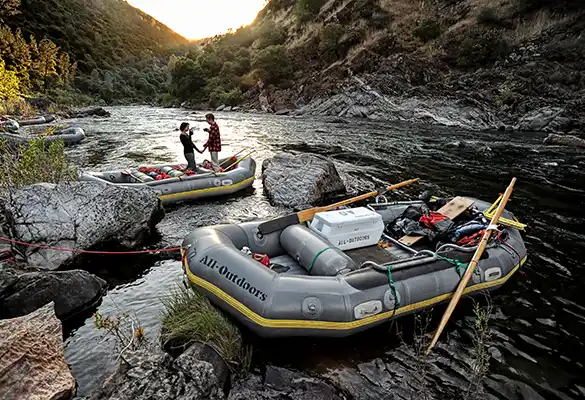

Enjoy two days of paddling, camping, and lasting memories. You will raft both sections of the South Fork and enjoy an overnight stay at our comfortable riverside camp - complete with meals, hot showers, flush toilets, electricity, and a small general store. Unplug and settle in, we'll take care of the rest!

Our Trips
we have the best rafting trip for you and your group.
There are a variety of discounts for group rafting trips. All types of groups are welcome! Groups of 6 or more: 5% off Groups of 12 or more: 10% off Groups of 18 or more: 15% off Discount applied automatically to eligible groups.25% Pre-Season Sale During November, December, or January save 25% on any trip for the following season. Applies on reservations Applies on Rafting Trip Certificates All trips April - October

Trips for young kids
Tom Sawyer Float Trip (South Fork Easy Section) Special trip for families with children too young for the Beginner-Intermediate trip.
Typical Season: Summer, Fall Trip Options: 1-Day Per-Person Rate: $169 - $184 Meet Place: Lotus, CA Specialty Trip for Children 5-7 Years Old IntermediateClass III-IV Merced River White water Rafting Trips Merced River Fast roller coaster ride for the adventurous rafter. Typical Season: Spring Trip Options: 1-Day Per-Person Rate: $209 - $229 Meet Place: Midpines, CA Usual Minimum Age: 12
Intermediate-AdvancedClass IV+ North Fork American Whitewater Rafting Trips North Fork American River Fast-paced rapids in a stunning springtime canyon. Typical Season: Spring Trip Options: 1-Day Per-Person Rate: $244 Meet Place: Lotus, CA Usual Minimum Age: 15

Rafting Near Yosemite
Add a rafting trip to your Yosemite National Park visit to discover more of California’s majestic beauty.

wilderness-overnight-rafting
Searching for a great 2-day camp and raft getaway? Our South Fork American River wilderness trip provides a mix of river adventure with off-the grid camping. Psst… we do all of the cooking and camp setup! Enjoy a memorable night of camping in the wilderness on the shores of river on a beautiful sandy beach. In addition to the on-the-river location, our secluded camp spot accesses the world renowned Western States Trail. Known in the trail running world for the 100-mile endurance run, you will be able to take a hike from our campsite and experience a remote part of the famous singletrack. (Side hikes for this trip are unguided.) Sleep under the stars, wake to the calming sounds of the water and enjoy the beautiful forested surroundings in the morning.
